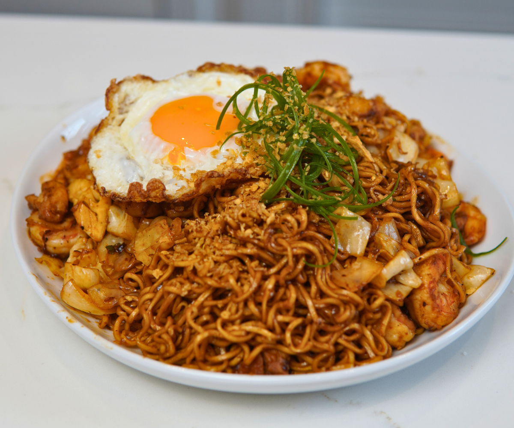

Mie Goreng

Description
Mie goreng, also known as bakmi goreng, is an Indonesian stir-fried noodle dish. It is made with thin yellow noodles stir-fried in cooking oil with garlic, onion or shallots, fried prawn, chicken, beef, or sliced bakso, chili, Chinese cabbage, cabbages, tomatoes, egg, and other vegetables.
Ingredients
- 3 instant noodle cakes
- 2 tbsp kecap manis
- 2 tsp light soy sauce
- 2 tsp dark soy sauce
- 1 tbsp oyster sauce
- 2 tbsp ketchup
- 1 tsp sambal oelak, chilli paste or Sriracha
- 2 tsp sesame oil
- 2 tbsp vegetable oil
- 2 eggs
- 3 garlic cloves
- 120g/4oz chicken breast or thigh
- 100g/3.5oz prawns/shrimp
- 2 cups cabbage
- 3 green onions
Steps
- Mix the Sauce in a bowl.
- Prepare noodles per packet directions just before cooking.
- Heat 1 tbsp oil in a large skillet over medium heat. Pour in egg, swirl to coat base. Cook 1 minute until mostly set, then flip (do your best!).
- Slide onto cutting board, roll up into loose "wrap". Slice into 1cm/ 1/3" thick pieces - you now have egg ribbons!
- Heat remaining 1 tbsp oil in same skillet over HIGH heat.
- Add garlic and chicken, cook until half surface turns white.
- Add prawns and cook for 1 minute until chicken is mostly cooked.
- Add cabbage and bean sprouts, toss for 1 minute until a bit wilted.
- Add noodles, green onions and Sauce, toss for 1 - 2 minutes until Sauce reduces and noodles caramelise a bit.
- Toss through egg ribbons and serve immediately!